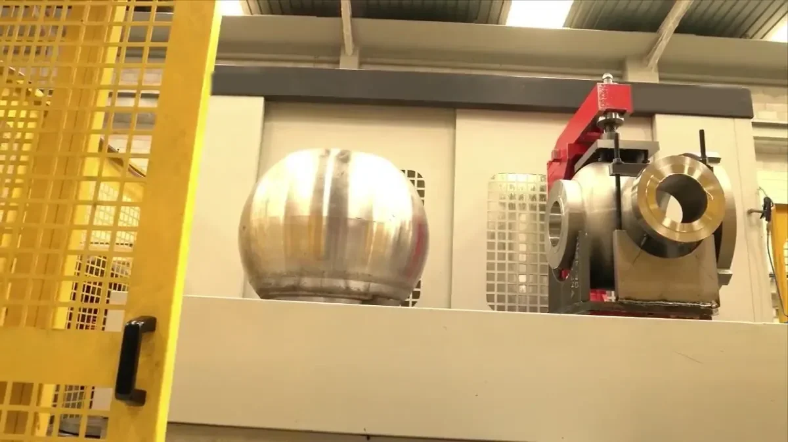
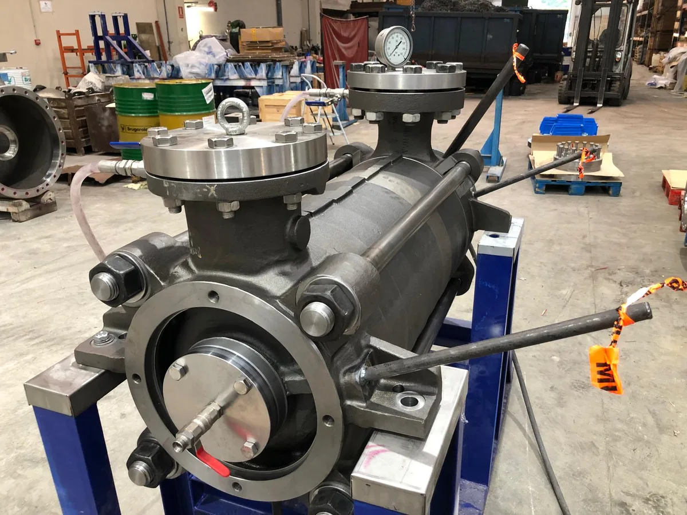
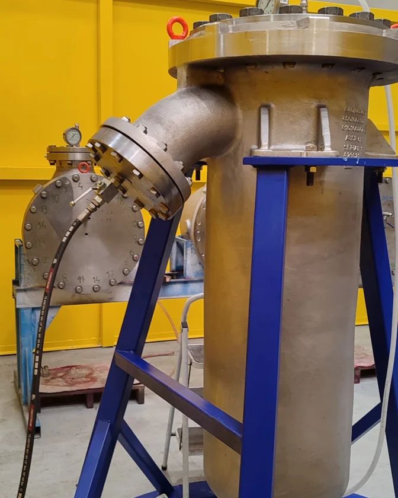

Sectores
Sectores con los que trabajamos.
Sectores exigentes con el material, la estanqueidad y la trazabilidad.
Sector
Petróleo y gas
Esferas y cuerpos de válvula, carcasas de bomba y componentes para extracción, refino y transporte, sobre todo en aceros inoxidables, dúplex y superdúplex.
- Piezas habitualesValve bodies (6″ to 24″), valve spheres, flowmeters


Sector
Nuclear
Componentes para instalaciones nucleares con trazabilidad completa, control dimensional y ensayos documentados. Soldadura con procedimientos según el código RCC-M y soldadores certificados según UNE-EN ISO 9606-1.
- Piezas habitualesVolutes, multi-stage pump casings


Sector
Ferroviario
Componentes para material rodante e infraestructura ferroviaria, en series con entregas programadas.
- Piezas habitualesAxlebox housings

Sector
Industrial
Componentes para maquinaria y equipos de proceso: bombas, válvulas y carcasas.
- Piezas habitualesMulti-stage casings, volutes, impellers, bowls, suction cases, barrels for centrifugal pumps, manifolds, compressor cases, motor casings


Sector
Sanitario
Piezas para equipos del sector sanitario, con los acabados y las tolerancias que pida su especificación.

Sector
Estructural
Piezas de acero fundido para estructuras y uniones que trabajan bajo carga.
Solicitud de oferta
Envíe plano y especificación.
Estudio de viabilidad técnica y plazo para cada referencia.